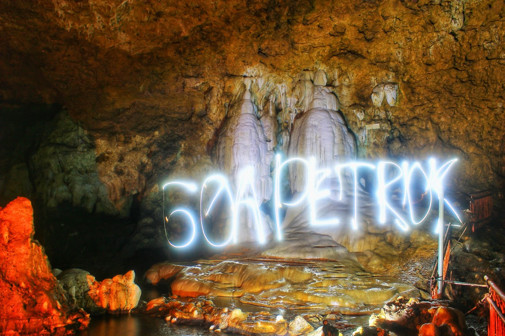
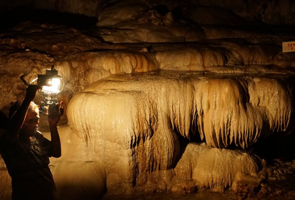

Goa Petruk

Gua Petruk adalah sebuah situs geologi yang terbentuk dari proses alamiah di Kawasan Karst Gombong Selatan yang terletak di Dusun Mandayana, Desa Candirenggo, Kecamatan Ayah, Kabupaten Kebumen, Provinsi Jawa Tengah, Indonesia. Gua yang keseluruhannya terbentuk dari kapur ini memiliki panjang keseluruhan hingga 2 Km dengan panjang jelajah 100 meter hingga 664 meter, lebar rata-rata 14 meter, dan tinggi rata-rata 32 meter. Gua ini berjarak 7 Km dari Gua Jatijajar, 38 Km berkendaradari pusat Kota Kebumen dan 24 Km dari Gombong menggunakan kendaraan pribadi maupun angkutan umum. Gua Petruk berada di Dusun Mandayana, Desa Candirenggo, Kecamatan Ayah, Kabupaten Kebumen, Provinsi Jawa Tengah, Indonesia.

Nama Petruk berasal dari sebuah batu (stalaktit/stalagmit) di dalam gua yang mempunyai bentuk seperti hidungnya Petruk, nama tokoh Ponokawan yaitu anak Ki Semar yang berbadan tinggi, namun hidungnya sangat mancung. Namun karena penambangan phosfat di masa penjajahan Belanda batu berbentuk hidung Petruk tersebut putus dan kini sudah tak kelihatan lagi. Goa Petruk terbagi menjadi tiga bagian. Selain itu terdapat stalaktit dan stalagmit yang masih asli bentuknya menyerupai payudara, tugu pancuran, baju putih dan semar. Bagian pertama hanya terdapat kelelawar dengan bau kurang sedap. Sedangkan untuk bagian kedua dalam lokasi tersebut diberi nama Gua Semar dan bagian ketigalah yang bernama Gua Petruk. Tidak seperti Gua Jatijajar, Gua Petruk tetap dijaga kealamiannnya, bahkan untuk diterangi dengan listrik tidak diperkenankan.

Gua Petruk telah lama dibuka untuk wisatawan umum oleh pemerintah Kabupaten Kebumen. Untuk dapat masuk ke gua ini disediakan alat-alat seperti headlamp, spatuboot, baju tahan air (coverall), helm pelindung kepala dan pemandu. Pemandu wisata akan selalu mendampingi dan membawakan lampu charge sebagai penerangnya. Di wisata Gua Petruk terdapat fasilitas pendukung seperti Mushalla, Tempat Parkir dan Warung Makanan. Selain itu terdapat beberapa Home Stay untuk wisatawan dari luar daerah. Selain masuk ke Gua Petruk, wisata seluas 0,51 hektar ini dapat melakukan hal menarik lainnya seperti panjat tebing di Tebing Putih Petruk.